A technology professional working across network administration, technical support, and IT operations — with a parallel track in teaching, HR, and now data analytics & AI.
My path into technology began at the LAUTECH ICT Centre in Ogbomosho, where I first got hands-on with local, metropolitan, and wide-area networks as a support intern. What started as curiosity about why a connection dropped or a system slowed down turned into a career spent finding those answers for other people — first as an intern, then as a network administrator, then as someone clients call when nothing else has worked.
Along the way, the work kept widening. At Fixxers Telecommunications I moved from pure network administration into HR and admin leadership, learning that keeping an organisation running smoothly is as much about people and policy as it is about routers and cabling. At The NAOWA College, I stepped into a classroom for the first time as a Digital Technologies teacher and exam officer, and found I genuinely enjoy explaining complex systems in ways that make sense to beginners — a skill that now shows up in how I write documentation, mentor students in the Coding Club, and support non-technical customers through their own tech problems.
Today I split my time between freelance IT and customer support work, teaching, and building out a foundation in data analytics and AI — because the tools I care about (networks, wireless systems, security) are all being reshaped by data, and I want to be fluent in that shift rather than catch up to it later.
"I like being the person who makes the complicated thing feel simple — whether that's a broken VPN or a first-year student's first line of code."
From a first internship on university networks to leading IT and HR operations, teaching, and now freelance consulting. Click any role to see the detail.
Technical depth, delivered with patience — whether the audience is a frustrated customer, a classroom of students, or a network diagram.
This is where I'm strongest: sitting between a technical problem and the person affected by it. Years of remote support work have taught me that resolution speed matters less than whether the person on the other end actually feels heard and unblocked.
I've built this into a repeatable practice — triaging by severity, documenting recurring issues so they stop recurring, and writing guides that let non-technical users solve their own problems next time.
My technical foundation is in networks — LAN, MAN, and WAN design and maintenance, IP telephony, and infrastructure that has to stay up whether or not anyone is watching. I hold a degree in Computer Engineering from LAUTECH and have carried that grounding through every IT role since.
I'm equally comfortable auditing an existing network as I am building one from scratch, and I lean on the Microsoft ecosystem and VMware for day-to-day systems administration.
Illustrated self-portrait — because a resume about firewalls should get to have one fun slide.
My newest track. I'm currently building formal grounding in data analytics and AI — coursework in management information systems and business analytics sits alongside a dedicated Data Analytics & AI certification, because I think the next decade of network and infrastructure work will be shaped by how well people can read the data those systems produce.
It also connects directly to a longer-standing interest: applying AI to wireless networks, where signal, capacity, and reliability problems are increasingly data problems first.
At Fixxers Telecommunications, my role stretched well beyond networking into people leadership — as Assistant Chief of Staff (Admin) and HR Manager, I directed personnel operations and helped formalise the policies that kept the organisation compliant and efficient as it grew.
That experience is backed by a professional certification in Human Resource Management, and it shapes how I manage help-desk teams, mentor students, and coordinate cross-time-zone collaborators today.
Since 2024 I've taught Digital Technologies at The NAOWA College and served as exam officer — a role that turned out to fit surprisingly well alongside IT work, since both come down to translating something complex into something a person can actually use.
I'm a TRCN-registered teacher with a Post Graduate Diploma in Education, and I coach the school's Coding Club and athletics teams alongside my classroom duties.
A rough read on depth of experience — core strengths built over years, alongside the areas I'm actively growing into.
Designed, implemented, and maintain the Computer-Based Test platform used for exams at The NAOWA College — from infrastructure setup to day-to-day reliability during exam windows.
Led network infrastructure surveys, redesigned parts of the network architecture, and configured IP telephony systems at Fixxers Telecommunications — delivering project cost savings exceeding ₦2 million.
Coach and mentor for The NAOWA College Coding Club, guiding students through their first real programs and into local coding competitions — which they've gone on to win.
Delivered through successful network infrastructure project management at Fixxers Telecommunications.
Completed Levels 1, 2 & 3 with the UK SHE Organisation — two of them with Distinction.
Mentored The NAOWA College Coding Club to victory in local coding competitions.
Consistently high student pass rates as Digital Technologies teacher and exam officer.
Designed and continue to maintain the school's Computer-Based Test examination system.
Coordinated school sports teams to medal finishes in inter-school competitions.
Filter by category, or click any certificate to view it in full.
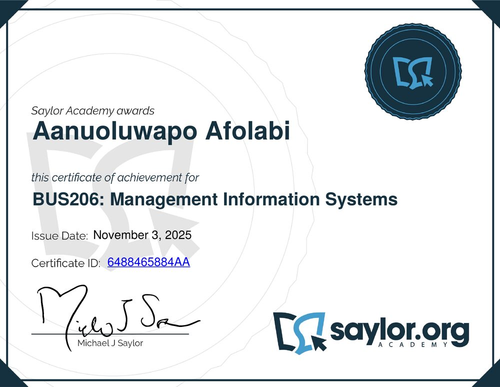
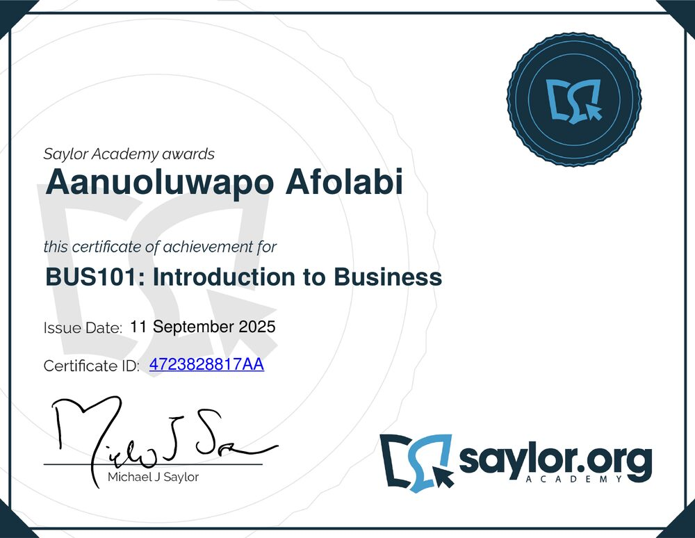
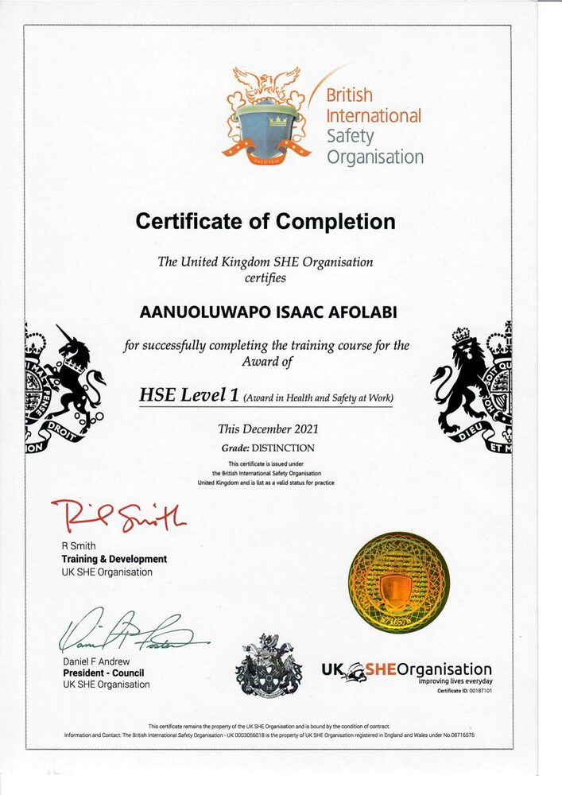
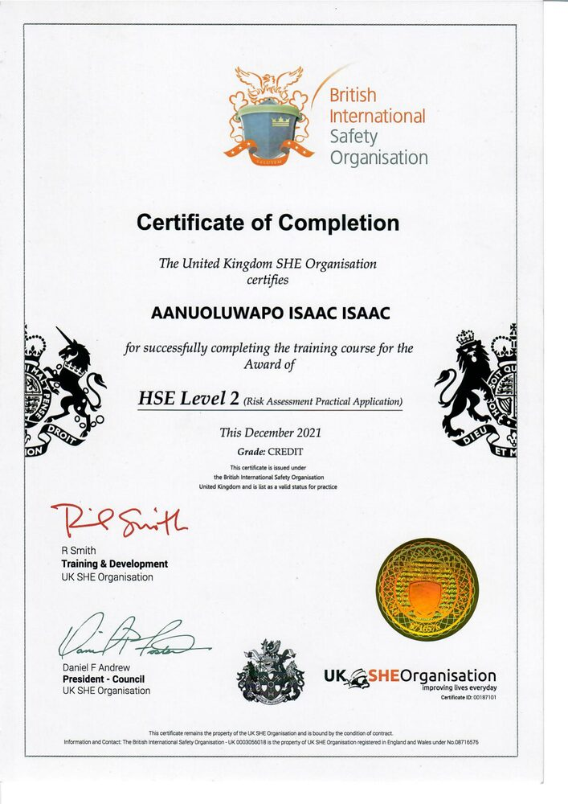
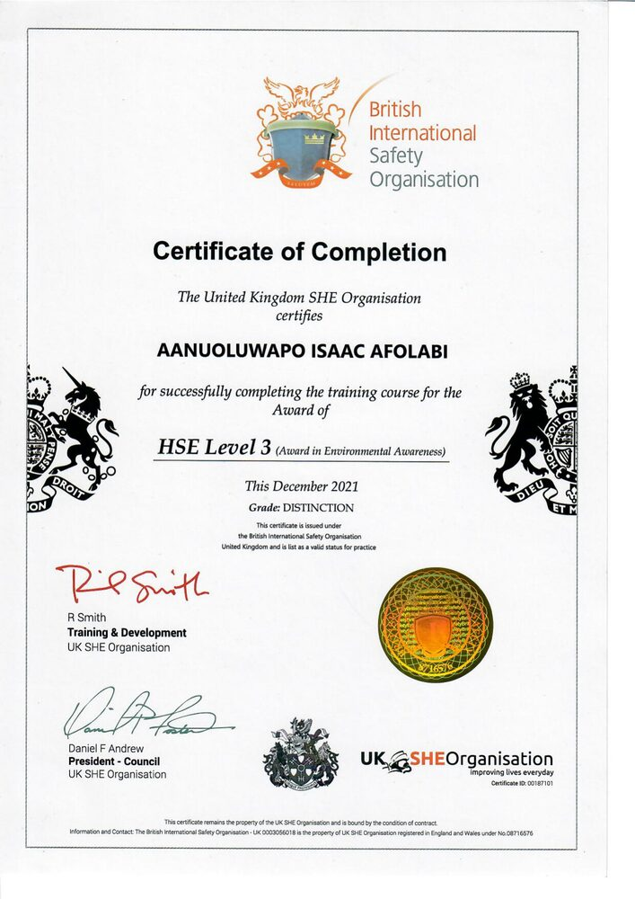
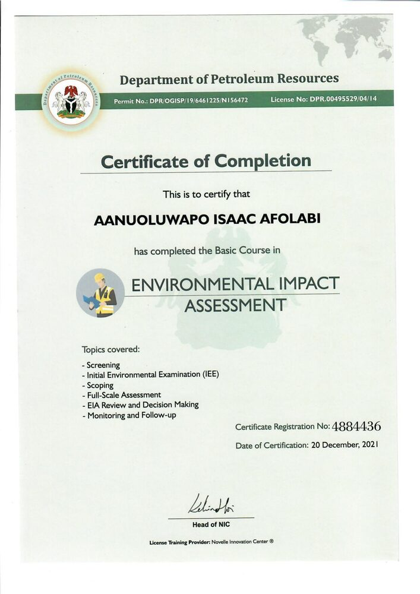
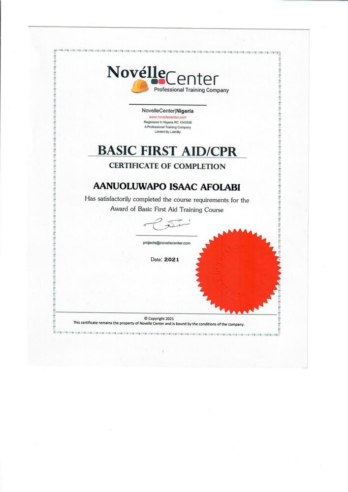
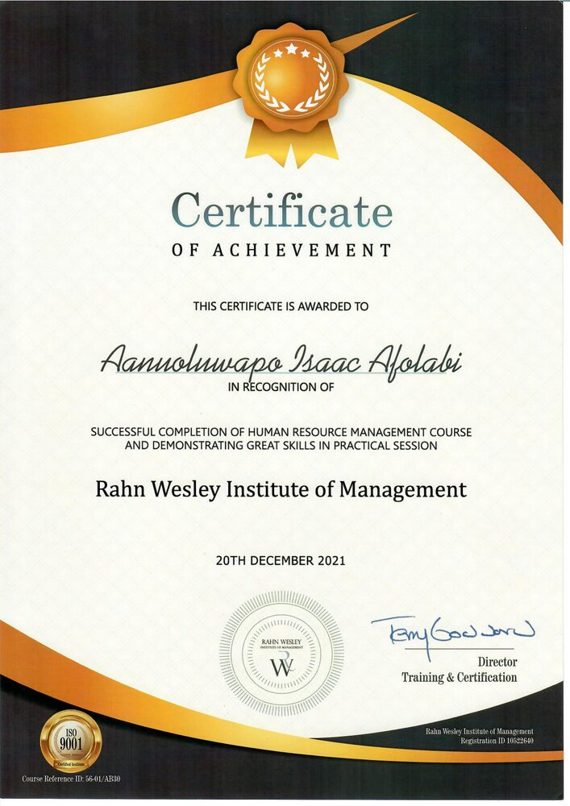
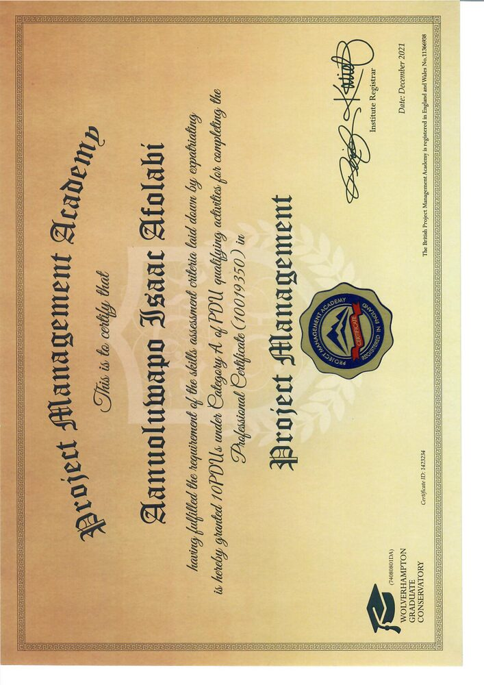
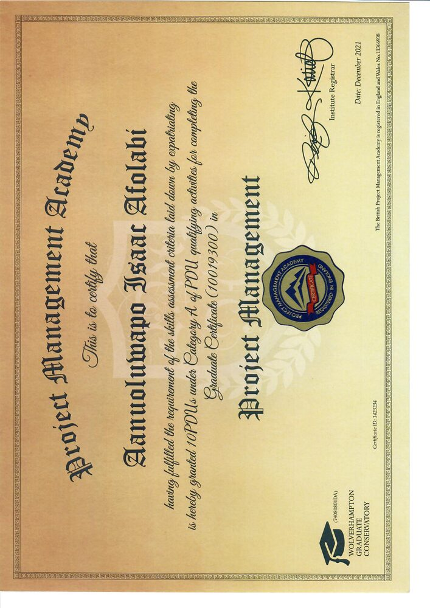
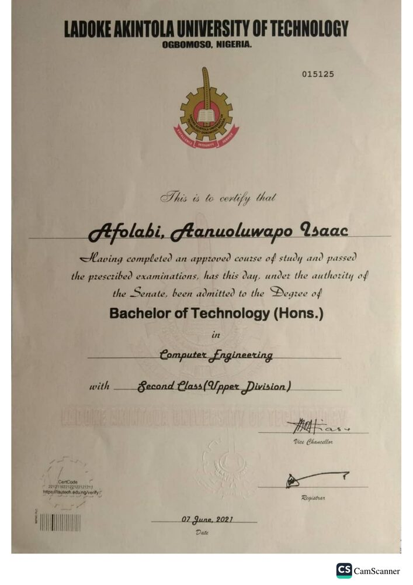
Second Class Upper. Bachelor's degree admitted by Senate on completion of the approved course of study.
Completed the course leading to the award of PGDE, 2023 session, passing all prescribed examinations. Centre: G.S.S. Karu, FCT Abuja.
Duly registered by the Council as a Certified Teacher, having fulfilled all conditions provided in the Act establishing TRCN.
Following how next-generation wireless standards are reshaping network design, latency, and capacity planning.
Grounded in an Information Security certification and Cisco's Introduction to Cybersecurity coursework.
Where my data & AI studies meet my networking background — applying machine learning to signal and network optimisation.
Open to opportunities in network administration, IT operations, technical & customer support, or roles that blend technology with people. Based in Abuja, comfortable remote or on-site.
Download full CV